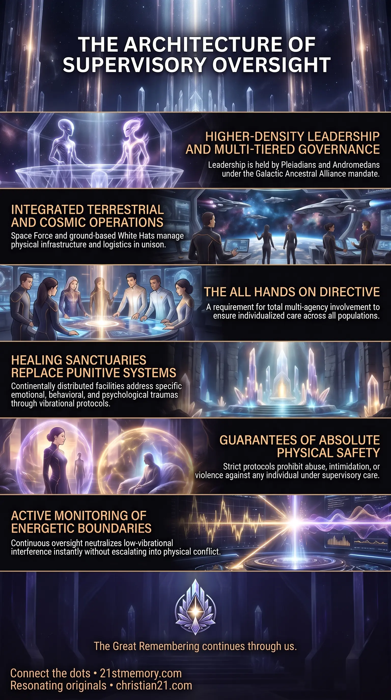

Planetary Restoration Under Supervisory Oversight
Planetary Restoration Under Supervisory Oversight — ET, Space Force, GAA, and White Hats restore remaining populations through continental healing sanctuaries.
2nd-realm ET supervise the new known lands, backed by Space Force, GAA, and White Hats.
Test your understanding of Supervisory Oversight — compassionate higher-density governance, healing sanctuaries, and the alliances that restore the new known lands.

Planetary Restoration Under Supervisory Oversight — ET, Space Force, GAA, and White Hats restore remaining populations through continental healing sanctuaries.

Supervisory Oversight — compassionate higher-density governance that rehabilitates the new known lands without harm or punitive rule.

The Architecture of Protective Oversight — protective boundaries and active monitoring replace coercion while deep personal healing takes place.
Supervisory Oversight constitutes the comprehensive administrative, protective, and rehabilitative governing architecture deployed across newly established planetary territories. Operating through higher-density leadership, this system secures global stability and facilitates population-wide restoration following major dimensional realignments. Rather than imposing tyrannical rule or authoritarian dominion, this oversight operates as an all hands on supportive framework designed to maintain energetic order and guide individuals through intense psychological and emotional healing.
Under this operational umbrella, extraterrestrial guidance coordinates directly with terrestrial and military infrastructure to ensure seamless management across all geographical regions. Every remaining individual is integrated into a structured environment that guarantees physical safety, prevents harm, and systematically addresses deep-seated behavioral distortions. Through strategically positioned centers of care, Supervisory Oversight establishes the foundational order necessary to bring the entire realm into unified balance and collective harmony.
The fundamental breakthrough of Supervisory Oversight lies in its complete rejection of traditional punitive governance in favor of absolute rehabilitative care. Entities under supervision are strictly protected from physical injury, mortality, or aggressive coercion, marking a paradigm shift toward compassionate authority. Authority is exercised not to submerge individuals under totalitarian control, but to maintain compassionate control and energetic boundaries while deep personal healing takes place.
Furthermore, this governance represents a seamless convergence between terrestrial military entities and multi-dimensional cosmic alliances. By uniting Space Force, the Galactic Ancestral Alliance (GAA), White Hats, and advanced extraterrestrial groups, the supervisory structure achieves complete coverage across all continental divisions. Continuous active monitoring ensures that low-vibrational interference or destructive behaviors are neutralized instantly without escalating into conflict or physical harm.
The operational execution of Supervisory Oversight relies on a multi-tiered alliance combining higher-density leadership with specialized grounded forces. Primary administrative responsibility is held by ET from the Second Realm, specifically high-vibrational lineages such as Pleiadians and Andromedans. These entities bring advanced understanding of energetic dynamics, consciousness mechanics, and trauma mitigation.
Supporting this extraterrestrial leadership is the Galactic Ancestral Alliance (GAA), which provides macro-level governance and strategic authorization. On the terrestrial plane, Space Force serves as the primary operational backing mechanism, managing physical infrastructure and security protocols alongside ground-level White Hats. Additional trusted personnel and specialized monitoring teams operate continuously to oversee global energetic conditions and technical parameters.
The jurisdiction of Supervisory Oversight extends across the New Known Lands, encompassing all continental sectors and former third-density landmasses. To manage diverse population needs efficiently, territory is divided into structured sectors based on specific rehabilitative requirements.
Rather than centralizing populations into homogenous camps, the framework distributes individuals across specialized healing sanctuaries located on different continents. Each sanctuary is tailored to address specific categories of trauma, behavioral disharmony, and psychological distortion. This geographic distribution prevents energetic congestion and ensures that every region receives dedicated oversight and resource allocation under the all hands on mandate.
A core function of Supervisory Oversight is the active rehabilitation of individuals exhibiting low-vibrational behavioral traits. Populations requiring assistance include those affected by compulsive deception, envy, malicious intent, selfishness, and greed. The supervisory framework treats these traits as unhealed trauma rather than irredeemable flaws.
Rehabilitation operates through targeted vibrational protocols and structured environment management. Individuals are provided with individualized care programs designed to dismantle negative behavioral patterns and recalibrate personal energy fields. Through sustained exposure to high-frequency environments maintained by supervisory staff, residents gradually release historical conditioning and align with higher vibrational standards.
Supervisory Oversight enforces strict ethical and operational boundaries that govern all interactions between supervisory staff and supervised populations. Crucially, the system prohibits all forms of physical abuse, verbal harassment, dominance, or intimidation. Nobody under supervisory care will be bossed around, pushed around, subjected to violence, or killed.
While a degree of structured control is maintained to ensure collective safety and prevent disruptions, this control operates strictly as a protective boundary. The supervisory staff possesses specialized expertise to manage volatile behaviors calmly and effectively without resorting to force. This guarantees an environment of absolute safety, allowing residents to undergo profound personal transformation without fear of retribution.
Supervisory Oversight operates in direct synergy with broader realm transition events, particularly the division of populations during portal activations. While individuals possessing elevated vibrational frequencies ascend through dimensional portals, those requiring further healing remain on the physical plane under supervisory care. The oversight mechanism ensures that no individual is abandoned, providing a secure, high-frequency environment for those remaining until full restoration is achieved.
Additionally, this administrative structure interfaces directly with the planetary energy grid and atmospheric aether conditions. By maintaining energetic balance across continental healing sanctuaries, supervisory personnel support the overall stabilization of the realm. This creates a harmonious feedback loop between individual consciousness rehabilitation and the macroscopic elevation of planetary frequencies.
The establishment of Supervisory Oversight fundamentally redefines planetary governance by replacing competition-driven systems with unified, service-oriented management. By eliminating economic exploitation, political corruption, and physical conflict, the oversight framework establishes a stable foundation for long-term societal evolution.
Ultimately, Supervisory Oversight serves as the vital bridge toward total global unity and dimensional harmonization. By resolving deep-seated trauma across all remaining populations, the framework ensures that humanity as a whole transitions into a balanced state where all become one, fully restored to original purity and peace.
This topic is free to share. Support the archive →